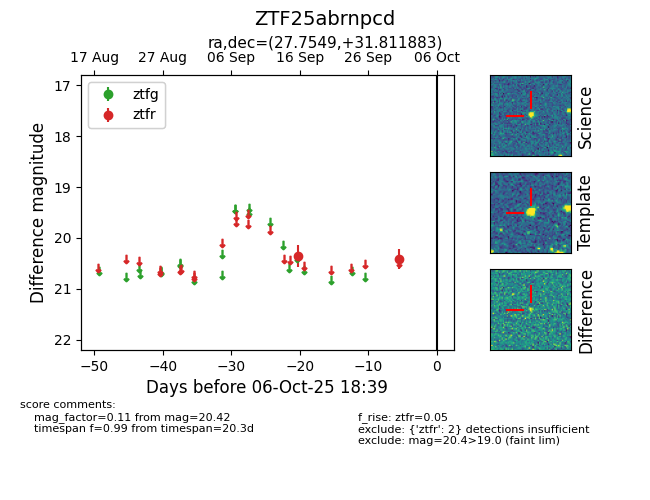

FINK: ZTF25abrnpcd
Lasair: ZTF25abrnpcd
ALeRCE: ZTF25abrnpcd
ZTF25abrnpcd (ztf,fink)
equatorial (ra, dec) = (27.7549,+31.81188)
galactic (l, b) = (137.4491,-29.37471)

last ztfr=20.42
2 ztfr detections